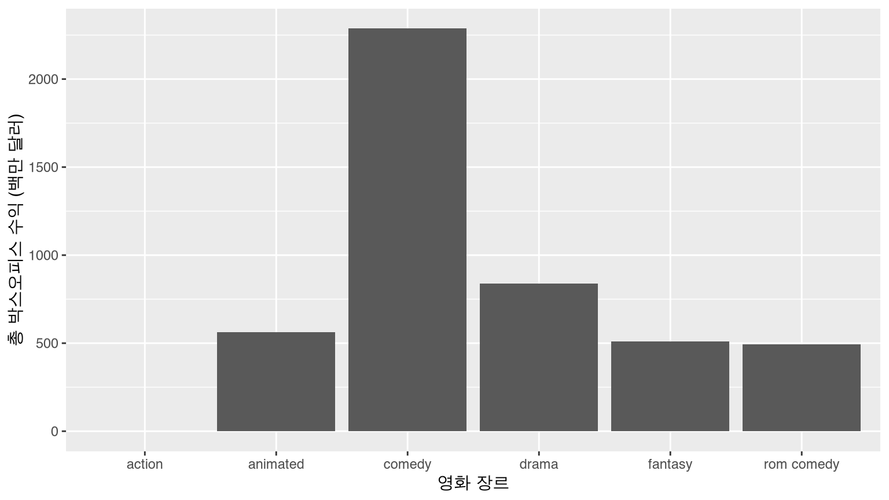
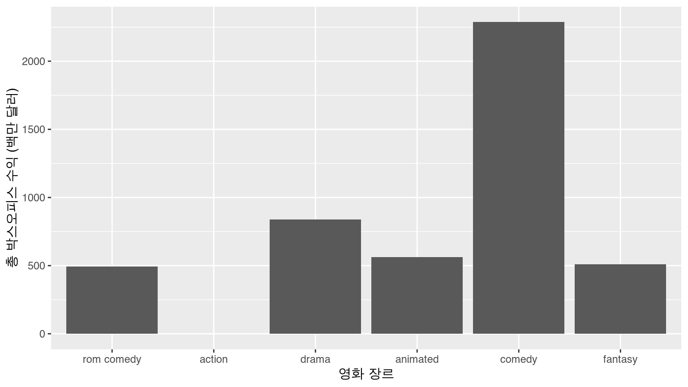
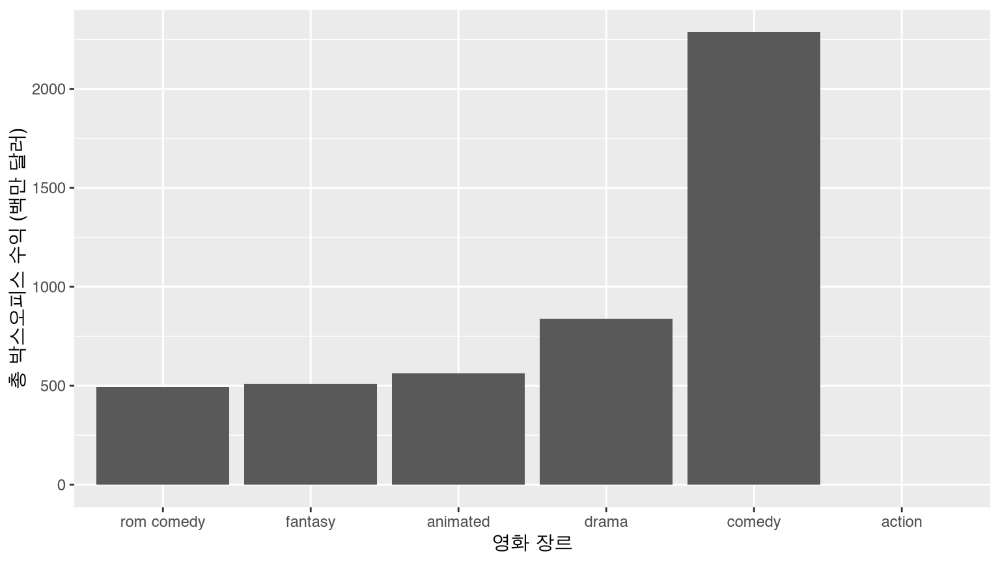
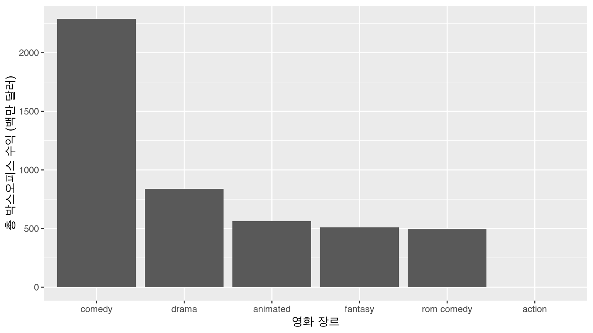
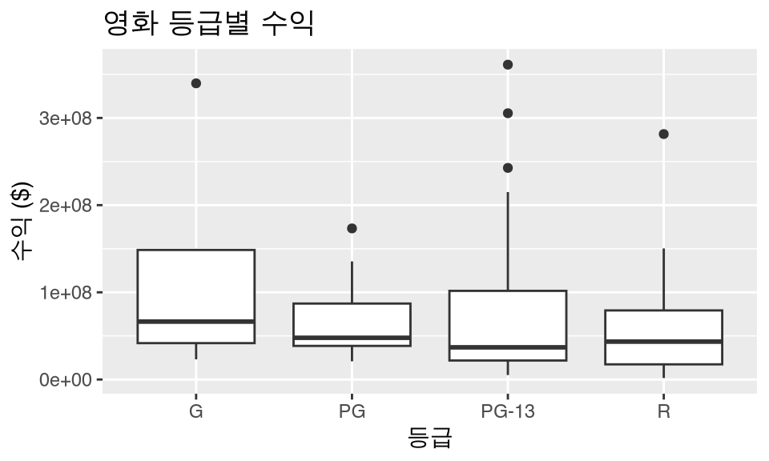
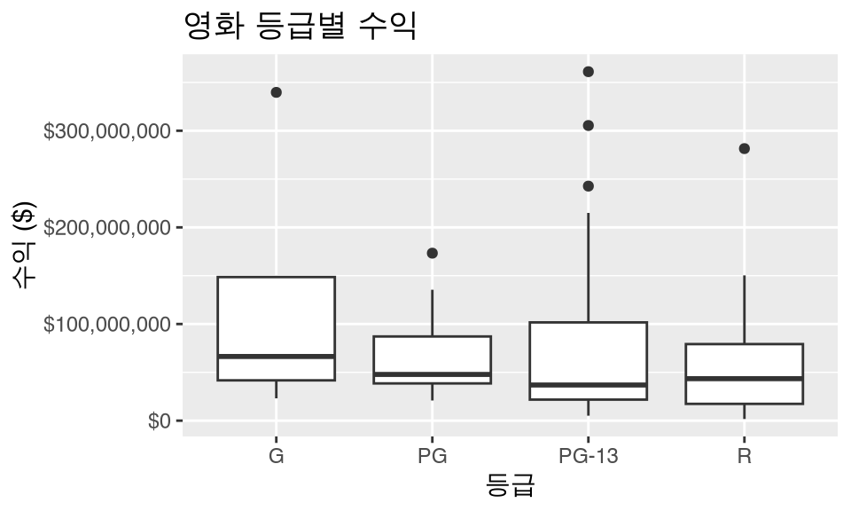

library(tidyverse)
library(scales)
library(janitor)
library(dygraphs)
library(nycflights13)팁과 요령
필요한 패키지
이 장에서 필요한 모든 패키지를 불러옵니다(이미 설치되어 있다고 가정합니다). 5.1.2절(?sec-tidyverse-package)에서 논의했듯이, library(tidyverse)를 실행하여 tidyverse 패키지를 불러오면 다음과 같이 자주 사용되는 데이터 과학용 패키지들을 한 번에 불러올 수 있습니다.
- 데이터 시각화를 위한
ggplot2 - 데이터 전처리를 위한
dplyr - 데이터를 “tidy” 형식으로 변환하기 위한
tidyr - 스프레드시트 데이터를 R로 가져오기 위한
readr - 그리고 더 고급 패키지인
purrr,tibble,stringr,forcats패키지들.
필요하다면 1.3절(?sec-packages)을 읽고 R 패키지를 설치하고 불러오는 방법에 대한 정보를 확인하세요.
데이터 전처리 (Data wrangling)
이 절에서는 학생 프로젝트에서 자주 접하게 되는 가장 일반적인 데이터 전처리 관련 질문들을 다룹니다(이를 정리해준 Dr. Jenny Smetzer에게 감사를 표합니다!):
- ?sec-appendix-missing-values: 결측치 처리하기
- ?sec-appendix-reordering-bars: 막대 그래프의 막대 순서 재정렬하기
- ?sec-appendix-money-on-axis: 축에 화폐 단위 표시하기
- ?sec-appendix-changing-values: 셀 내부의 값 변경하기
- ?sec-appendix-convert-numerical-categorical: 수치형 변수를 범주형 변수로 변환하기
- ?sec-appendix-prop: 비율 계산하기
- ?sec-appendix-commas: %, 콤마(,), $ 기호 처리하기

예제 영화 데이터셋을 불러와서 행과 열을 조금 줄인 다음, slice()를 사용하여 처음 10개 행을 확인해 보겠습니다.
movies_ex <- read_csv("https://moderndive.com/data/movies.csv") %>%
filter(type %in% c("action", "comedy", "drama", "animated", "fantasy", "rom comedy")) %>%
select(-over200)
movies_ex %>%
slice(1:10)# A tibble: 10 × 5
name score rating type millions
<chr> <dbl> <chr> <chr> <dbl>
1 2 Fast 2 Furious 48.9 PG-13 action NA
2 A Guy Thing 39.5 PG-13 rom comedy 15.5
3 A Man Apart 42.9 R action 26.2
4 A Mighty Wind 79.9 PG-13 comedy 17.8
5 Agent Cody Banks 57.9 PG action 47.8
6 Alex & Emma 35.1 PG-13 rom comedy 14.2
7 American Wedding 50.7 R comedy 104.
8 Anger Management 62.6 PG-13 comedy 134.
9 Anything Else 63.3 R rom comedy 3.21
10 Bad Boys II 38.1 R action 138. 결측치 처리하기
영화 “2 Fast 2 Furious”의 millions 열(수익 값이 NA(결측치)인 것을 볼 수 있습니다. 따라서 수익의 중앙값을 계산할 때 다음과 같은 결과가 발생합니다.
movies_ex %>%
summarize(mean_profit = median(millions))# A tibble: 1 × 1
mean_profit
<dbl>
1 NA데이터 값이 왜 누락되었을 수 있는지, 그리고 그 누락이 무엇을 의미하는지 항상 생각해야 합니다. 예를 들어, 흡연이 폐암에 미치는 영향에 대한 연구를 수행하는데 폐암으로 사망했기 때문에 많은 환자의 데이터가 누락되었다고 가정해 봅시다. 만약 여러분이 이 환자들을 무시한다면, 연구 결과에 분명히 편향(bias)이 생길 것입니다.
결측 데이터를 처리하는 통계적 방법이 있지만, 이는 본 수업의 범위를 벗어납니다. 가장 쉬운 방법은 결측된 모든 사례를 제거하는 것이지만, 결측치를 제거할 때는 항상 최소한 독자에게 그 사실을 알려야 합니다. 결측치를 제거하면 결과가 왜곡될 수 있기 때문입니다.
다음과 같이 na.rm = TRUE 인수를 사용하여 이를 처리할 수 있습니다.
movies_ex %>%
summarize(mean_profit = median(millions, na.rm = TRUE))# A tibble: 1 × 1
mean_profit
<dbl>
1 43.4결측 데이터가 포함된 행 자체를 제거하고 싶다면 다음과 같이 filter 함수를 사용할 수 있습니다.
movies_no_missing <- movies_ex %>%
filter(!is.na(millions))
movies_no_missing %>%
slice(1:10)# A tibble: 10 × 5
name score rating type millions
<chr> <dbl> <chr> <chr> <dbl>
1 A Guy Thing 39.5 PG-13 rom comedy 15.5
2 A Man Apart 42.9 R action 26.2
3 A Mighty Wind 79.9 PG-13 comedy 17.8
4 Agent Cody Banks 57.9 PG action 47.8
5 Alex & Emma 35.1 PG-13 rom comedy 14.2
6 American Wedding 50.7 R comedy 104.
7 Anger Management 62.6 PG-13 comedy 134.
8 Anything Else 63.3 R rom comedy 3.21
9 Bad Boys II 38.1 R action 138.
10 Bad Santa 75.8 R comedy 59.5 이제 “2 Fast 2 Furious”가 사라진 것을 확인할 수 있습니다.
막대 그래프의 막대 순서 재정렬하기
각 영화 유형별 총 수익을 계산하고 막대 그래프를 그려보겠습니다.
revenue_by_type <- movies_ex %>%
group_by(type) %>%
summarize(total_revenue = sum(millions))
revenue_by_type# A tibble: 6 × 2
type total_revenue
<chr> <dbl>
1 action NA
2 animated 561.
3 comedy 2287.
4 drama 840.
5 fantasy 509.
6 rom comedy 492.ggplot(revenue_by_type, aes(x = type, y = total_revenue)) +
geom_col() +
labs(x = "영화 장르", y = "총 박스오피스 수익 (백만 달러)")
범주형 변수 type을 재정렬하여 막대가 다른 순서로 표시되게 하고 싶다고 가정해 봅시다. factor() 명령의 levels 인수를 사용하여 막대의 순서를 직접 정의할 수 있습니다.
type_levels <- c("rom comedy", "action", "drama", "animated", "comedy", "fantasy")
revenue_by_type <- revenue_by_type %>%
mutate(type = factor(type, levels = type_levels))
ggplot(revenue_by_type, aes(x = type, y = total_revenue)) +
geom_col() +
labs(x = "영화 장르", y = "총 박스오피스 수익 (백만 달러)")
또는 total_revenue를 기준으로 type을 오름차순으로 재정렬하려면 reorder() 함수를 사용합니다.
revenue_by_type <- revenue_by_type %>%
mutate(type = reorder(type, total_revenue))
ggplot(revenue_by_type, aes(x = type, y = total_revenue)) +
geom_col() +
labs(
x = "영화 장르", y = "총 박스오피스 수익 (백만 달러)"
)
total_revenue를 기준으로 내림차순으로 재정렬하려면 reorder() 함수에서 total_revenue 앞에 - 기호를 붙이면 됩니다.
revenue_by_type <- revenue_by_type %>%
mutate(type = reorder(type, -total_revenue))
ggplot(revenue_by_type, aes(x = type, y = total_revenue)) +
geom_col() +
labs(
x = "영화 장르", y = "총 박스오피스 수익 (백만 달러)"
)
더 고급스러운 범주형 변수(즉, 요인(factor) 조작에 대해서는 forcats 패키지를 확인해 보세요. 참고로 forcats는 factors의 애너그램(철자 바꾸기)입니다.

축에 화폐 단위 표시하기
movies_ex <- movies_ex %>%
mutate(revenue = millions * 10^6)
ggplot(data = movies_ex, aes(x = rating, y = revenue)) +
geom_boxplot() +
labs(x = "등급", y = "수익 ($)", title = "영화 등급별 수익")
구글에서 “ggplot2 axis scale dollars”를 검색하고 첫 번째 링크를 클릭한 후 “dollars”라는 단어를 검색해 보세요. 다음과 같은 내용을 찾을 수 있습니다.
# 먼저 scales 패키지를 불러오는 것을 잊지 마세요!
library(scales)
ggplot(data = movies_ex, aes(x = rating, y = revenue)) +
geom_boxplot() +
labs(x = "등급", y = "수익 ($)", title = "영화 등급별 수익") +
scale_y_continuous(labels = dollar)
셀 내부의 값 변경하기
dplyr 패키지의 rename() 함수는 열/변수의 이름을 바꿉니다. 특정 열의 셀 내부의 값을 “바꾸려면”, 아래의 세 가지 함수 중 하나를 사용하여 열을 mutate()해야 합니다. 다른 함수들도 있을 수 있지만, 이 세 가지가 가장 자주 쓰입니다. 이 예제들에서는 type 변수의 값을 변경해 보겠습니다.
if_else()recode()case_when()
if_else()
dplyr 패키지의 if_else()를 사용하여 rom comedy의 모든 인스턴스를 romantic comedy로 바꿉니다. 특정 행의 type이 "rom comedy"이면 "romantic comedy"를 반환하고, 그렇지 않으면 원래 type에 있던 값을 반환합니다. 모든 내용을 새 변수 type_new에 저장합니다.
movies_ex %>%
mutate(type_new = if_else(type == "rom comedy", "romantic comedy", type)) %>%
slice(1:10)# A tibble: 10 × 7
name score rating type millions revenue type_new
<chr> <dbl> <chr> <chr> <dbl> <dbl> <chr>
1 2 Fast 2 Furious 48.9 PG-13 action NA NA action
2 A Guy Thing 39.5 PG-13 rom comedy 15.5 15545000 romantic comedy
3 A Man Apart 42.9 R action 26.2 26247999 action
4 A Mighty Wind 79.9 PG-13 comedy 17.8 17781000 comedy
5 Agent Cody Banks 57.9 PG action 47.8 47811001 action
6 Alex & Emma 35.1 PG-13 rom comedy 14.2 14219000 romantic comedy
7 American Wedding 50.7 R comedy 104. 104441000 comedy
8 Anger Management 62.6 PG-13 comedy 134. 134404010 comedy
9 Anything Else 63.3 R rom comedy 3.21 3212000. romantic comedy
10 Bad Boys II 38.1 R action 138. 138397000 action 여기서도 같은 작업을 수행하지만, type이 "rom comedy"가 아니면 "not romantic comedy"를 반환하고, 이번에는 원래의 type 변수를 덮어씁니다.
movies_ex %>%
mutate(type = if_else(type == "rom comedy", "romantic comedy", "not romantic comedy")) %>%
slice(1:10)# A tibble: 10 × 6
name score rating type millions revenue
<chr> <dbl> <chr> <chr> <dbl> <dbl>
1 2 Fast 2 Furious 48.9 PG-13 not romantic comedy NA NA
2 A Guy Thing 39.5 PG-13 romantic comedy 15.5 15545000
3 A Man Apart 42.9 R not romantic comedy 26.2 26247999
4 A Mighty Wind 79.9 PG-13 not romantic comedy 17.8 17781000
5 Agent Cody Banks 57.9 PG not romantic comedy 47.8 47811001
6 Alex & Emma 35.1 PG-13 romantic comedy 14.2 14219000
7 American Wedding 50.7 R not romantic comedy 104. 104441000
8 Anger Management 62.6 PG-13 not romantic comedy 134. 134404010
9 Anything Else 63.3 R romantic comedy 3.21 3212000.
10 Bad Boys II 38.1 R not romantic comedy 138. 138397000 recode()
하지만 if_else()는 다소 제한적입니다. 모든 type이 대문자로 시작하도록 “이름을 바꾸고” 싶다면 어떻게 해야 할까요? recode()를 사용하세요.
movies_ex %>%
mutate(type_new = recode(type,
"action" = "Action",
"animated" = "Animated",
"comedy" = "Comedy",
"drama" = "Drama",
"fantasy" = "Fantasy",
"rom comedy" = "Romantic Comedy"
)) %>%
slice(1:10)# A tibble: 10 × 7
name score rating type millions revenue type_new
<chr> <dbl> <chr> <chr> <dbl> <dbl> <chr>
1 2 Fast 2 Furious 48.9 PG-13 action NA NA Action
2 A Guy Thing 39.5 PG-13 rom comedy 15.5 15545000 Romantic Comedy
3 A Man Apart 42.9 R action 26.2 26247999 Action
4 A Mighty Wind 79.9 PG-13 comedy 17.8 17781000 Comedy
5 Agent Cody Banks 57.9 PG action 47.8 47811001 Action
6 Alex & Emma 35.1 PG-13 rom comedy 14.2 14219000 Romantic Comedy
7 American Wedding 50.7 R comedy 104. 104441000 Comedy
8 Anger Management 62.6 PG-13 comedy 134. 134404010 Comedy
9 Anything Else 63.3 R rom comedy 3.21 3212000. Romantic Comedy
10 Bad Boys II 38.1 R action 138. 138397000 Action case_when()
case_when()은 조금 더 까다롭지만, ==, >, >=, &, | 등을 사용하여 불리언(boolean 연산을 평가할 수 있게 해줍니다.
movies_ex %>%
mutate(
type_new =
case_when(
type == "action" & millions > 40 ~ "Big budget action",
type == "rom comedy" & millions < 40 ~ "Small budget romcom",
# 위의 두 경우에 해당하지 않는 나머지를 위해 필요합니다.
TRUE ~ "Rest"
)
)# A tibble: 108 × 7
name score rating type millions revenue type_new
<chr> <dbl> <chr> <chr> <dbl> <dbl> <chr>
1 2 Fast 2 Furious 48.9 PG-13 action NA NA Rest
2 A Guy Thing 39.5 PG-13 rom comedy 15.5 15545000 Small budget ro…
3 A Man Apart 42.9 R action 26.2 26247999 Rest
4 A Mighty Wind 79.9 PG-13 comedy 17.8 17781000 Rest
5 Agent Cody Banks 57.9 PG action 47.8 47811001 Big budget acti…
6 Alex & Emma 35.1 PG-13 rom comedy 14.2 14219000 Small budget ro…
7 American Wedding 50.7 R comedy 104. 104441000 Rest
8 Anger Management 62.6 PG-13 comedy 134. 134404010 Rest
9 Anything Else 63.3 R rom comedy 3.21 3212000. Small budget ro…
10 Bad Boys II 38.1 R action 138. 138397000 Big budget acti…
# ℹ 98 more rows수치형 변수를 범주형 변수로 변환하기
가끔 수치형 연속 변수를 범주형 변수로 바꾸고 싶을 때가 있습니다. 예를 들어, 영화가 1억 달러 이상의 수익을 올렸는지 여부를 나타내는 변수를 만들고 싶다고 해봅시다. 즉, 2개의 레벨을 가진 범주형 변수인 이진 변수(binary variable)를 만들 수 있습니다. 이때 다시 mutate() 함수를 사용할 수 있습니다.
movies_ex %>%
mutate(big_budget = millions > 100) %>%
slice(1:10)# A tibble: 10 × 7
name score rating type millions revenue big_budget
<chr> <dbl> <chr> <chr> <dbl> <dbl> <lgl>
1 2 Fast 2 Furious 48.9 PG-13 action NA NA NA
2 A Guy Thing 39.5 PG-13 rom comedy 15.5 15545000 FALSE
3 A Man Apart 42.9 R action 26.2 26247999 FALSE
4 A Mighty Wind 79.9 PG-13 comedy 17.8 17781000 FALSE
5 Agent Cody Banks 57.9 PG action 47.8 47811001 FALSE
6 Alex & Emma 35.1 PG-13 rom comedy 14.2 14219000 FALSE
7 American Wedding 50.7 R comedy 104. 104441000 TRUE
8 Anger Management 62.6 PG-13 comedy 134. 134404010 TRUE
9 Anything Else 63.3 R rom comedy 3.21 3212000. FALSE
10 Bad Boys II 38.1 R action 138. 138397000 TRUE 만약 수치형 변수를 2개 이상의 레벨을 가진 범주형 변수로 변환하고 싶다면 어떻게 해야 할까요? 한 가지 방법은 cut() 명령을 사용하는 것입니다. 예를 들어, 아래에서는 score 변수를 4개의 카테고리로 다시 코딩하기 위해 cut()을 사용합니다.
- 0 - 40 = bad
- 40.1 - 60 = so-so
- 60.1 - 80 = good
- 80.1+ = great
c(0, 40, 60, 80, 100) 부분을 통해 수치형 변수를 자를 지점들을 설정하고, labels = c("bad", "so-so", "good", "great") 부분을 통해 각 구간의 라벨을 설정합니다. 이 모든 작업은 mutate() 명령 내부에서 이루어지므로, 새로운 범주형 변수인 score_categ가 데이터 프레임에 추가됩니다.
movies_ex %>%
mutate(score_categ = cut(score,
breaks = c(0, 40, 60, 80, 100),
labels = c("bad", "so-so", "good", "great")
)) %>%
slice(1:10)# A tibble: 10 × 7
name score rating type millions revenue score_categ
<chr> <dbl> <chr> <chr> <dbl> <dbl> <fct>
1 2 Fast 2 Furious 48.9 PG-13 action NA NA so-so
2 A Guy Thing 39.5 PG-13 rom comedy 15.5 15545000 bad
3 A Man Apart 42.9 R action 26.2 26247999 so-so
4 A Mighty Wind 79.9 PG-13 comedy 17.8 17781000 good
5 Agent Cody Banks 57.9 PG action 47.8 47811001 so-so
6 Alex & Emma 35.1 PG-13 rom comedy 14.2 14219000 bad
7 American Wedding 50.7 R comedy 104. 104441000 so-so
8 Anger Management 62.6 PG-13 comedy 134. 134404010 good
9 Anything Else 63.3 R rom comedy 3.21 3212000. good
10 Bad Boys II 38.1 R action 138. 138397000 bad cut 함수의 다른 옵션들:
- 기본적으로 값이 정확히 구간의 상한선인 경우, 더 작은 카테고리에 포함됩니다(예: 60.0은 ’good’이 아니라 ’so-so’임). 이를 반대로 바꾸려면
right = FALSE인수를 포함하세요. - R이 변수를 균형 잡힌 개수의 그룹으로 똑같이 나누게 할 수도 있습니다. 예를 들어,
breaks = 3을 지정하면 각 그룹에 대략 같은 수의 값이 포함된 3개의 그룹이 생성됩니다.
비율 계산하기
자주 사용되는 group_by() 뒤에 summarize()가 오는 대신 mutate()를 사용하는 방법입니다. 각 영화 등급(rating)과 유형(type)에 따른 총 수익(백만 달러)을 계산한다고 해봅시다.
rating_by_type_millions <- movies_ex %>%
group_by(rating, type) %>%
summarize(millions = sum(millions)) %>%
arrange(rating, type)
rating_by_type_millions# A tibble: 15 × 3
# Groups: rating [4]
rating type millions
<chr> <chr> <dbl>
1 G animated 496.
2 PG action 47.8
3 PG animated 65.7
4 PG comedy 830.
5 PG drama 161.
6 PG fantasy 147.
7 PG-13 action NA
8 PG-13 comedy 1208.
9 PG-13 drama 306.
10 PG-13 fantasy 361.
11 PG-13 rom comedy 406.
12 R action 1045.
13 R comedy 249.
14 R drama 373.
15 R rom comedy 86.0각 영화 등급(G, PG, PG-13, R 내에서 각 영화 유형(애니메이션, 액션, 코미디 등)이 차지하는 total_millions의 비율을 알고 싶다면 다음과 같이 할 수 있습니다.
rating_by_type_millions %>%
group_by(rating) %>%
mutate(
# 등급별로 나누어진 수입의 합계를 새로운 열로 계산합니다.
total_millions = sum(millions),
# 각 등급 내에서의 비율을 계산합니다.
prop = millions / total_millions
)# A tibble: 15 × 5
# Groups: rating [4]
rating type millions total_millions prop
<chr> <chr> <dbl> <dbl> <dbl>
1 G animated 496. 496. 1
2 PG action 47.8 1251. 0.0382
3 PG animated 65.7 1251. 0.0525
4 PG comedy 830. 1251. 0.663
5 PG drama 161. 1251. 0.129
6 PG fantasy 147. 1251. 0.118
7 PG-13 action NA NA NA
8 PG-13 comedy 1208. NA NA
9 PG-13 drama 306. NA NA
10 PG-13 fantasy 361. NA NA
11 PG-13 rom comedy 406. NA NA
12 R action 1045. 1753. 0.596
13 R comedy 249. 1753. 0.142
14 R drama 373. 1753. 0.213
15 R rom comedy 86.0 1753. 0.0491예를 들어, R 등급 영화에 해당하는 4개의 비율을 합하면 0.596 + 0.142 + 0.213 + 0.0491 = 1이 됩니다.
%, 콤마(,), $ 기호 처리하기
퍼센트로 기록되어 있거나, 콤마가 있거나, 달러 형태여서 문자열로 처리된 수치 데이터가 있다고 해봅시다. 이를 어떻게 수치형 값으로 변환할까요? mutate() 내부에서 readr 패키지의 parse_number() 함수를 사용하면 됩니다! Stack Overflow에 감사를 표합니다.
library(readr)
parse_number("10.5%")[1] 10.5parse_number("145,897")[1] 145897parse_number("$1,234.5")[1] 1234.5반대의 경우는 어떨까요? scales 패키지를 사용하세요!
library(scales)
percent(0.105)[1] "10%"comma(145897)[1] "145,897"dollar(1234.5)[1] "$1,234.50"축하합니다. 이제 여러분은 R 닌자(R Ninja)입니다!
대화형 그래픽 (Interactive graphics)
대화형 선그래프
이와 같은 선그래프를 보는 또 다른 유용한 도구는 dygraphs 패키지의 dygraph() 함수와 dyRangeSelector() 함수를 함께 사용하는 것입니다. 이를 통해 선택한 범위를 확대하고 우리가 작업할 수 있는 대화형 플롯을 얻을 수 있습니다.
library(dygraphs)
library(nycflights13)
flights_day <- mutate(flights, date = as.Date(time_hour))
flights_summarized <- flights_day %>%
group_by(date) %>%
summarize(median_arr_delay = median(arr_delay, na.rm = TRUE)) %>%
as.data.frame()
rownames(flights_summarized) <- flights_summarized$date
flights_summarized <- select(flights_summarized, -date)
if (knitr::is_html_output()) {
dyRangeSelector(dygraph(flights_summarized))
}여기서 구문은 지금까지 다룬 내용과는 약간 다릅니다. dygraph() 함수는 날짜가 객체의 행 이름(rownames)으로 제공되기를 기대합니다. 데이터를 데이터 프레임으로 변환한 다음(티블(tibble)은 행 이름 조작이 쉽지 않기 때문입니다), date 변수를 flights_summarized 데이터 프레임에서 제거합니다. 이는 이미 행 이름으로 반영되어 있기 때문입니다. 마지막으로, 중앙값 도착 지연 시간만을 열로 가진 새 데이터 프레임에 대해 dygraph() 함수를 실행하고, dyRangeSelector를 통해 대화형 플롯을 확대/축소할 수 있는 선택기 기능을 제공합니다. (이 플롯은 이 책의 HTML 버전에서만 대화형으로 작동한다는 점에 유의하세요.)